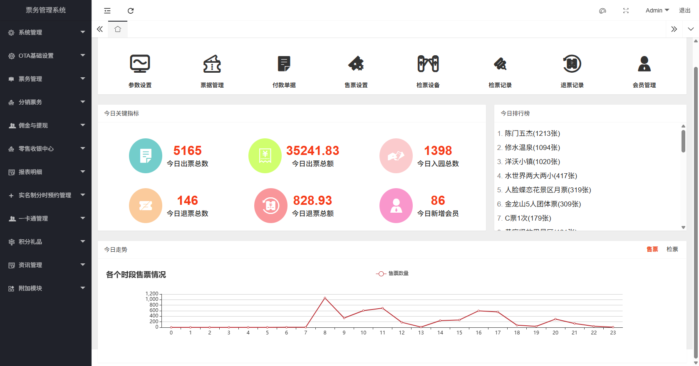

Smart Ticketing System Introduction
Tip: This document contains all the instructions for the ZhongLian Network ticketing system. You can selectively read the corresponding chapters according to your actual needs. As the software system is continuously updated and upgraded, the document content may be lagging. If the document description does not match the actual functions of the software, please refer to the software interface. We will synchronize and update the documentation as soon as possible.
System Overview
The ZhongLian Ticketing System is a universal ticket management system independently developed by Guangxi ZhongLian Network Technology Co., Ltd. for various business formats such as scenic spots, amusement parks, rural tourism ecological parks, and exhibitions. This system is committed to achieving data integration of online and offline full-process services, providing an integrated solution covering scenarios such as ticket sales, ticket checking, marketing, and management.
New Feature Highlights
Function Update:
- Ticket rules support Cron expressions: To meet complex business needs, the new version now supports more flexible setting of ticket usage rules through Cron expressions. For details, please refer to Cron Settings.
- Ticket reservation function: The system has officially launched the ticket reservation function to facilitate advance management and control of passenger flow.
Welcome to log in to our demo system to experience the functions in person. https://ticket.anjian99.com/
Core Functions
- Comprehensive ticket management: With ticket sales and ticket checking as the core, the system can flexibly configure various mainstream tickets on the market, such as annual tickets, package tickets, group tickets, and multi-ride tickets, through parameter combinations.
- Integrated business integration: In addition to the core ticketing function, the system also integrates value-added service modules such as parking fees, hotel accommodation, cashier ordering, channel distribution, and one-card consumption to meet comprehensive operational needs.
System Composition
The system consists of the following parts to meet the operational needs of different scenarios:
- Backend management terminal
- Mini program client
- Self-service ticket machine (Windows)
- Handheld ticket machine (Android)
- Handheld ticket inspector (Android)
- Computer ticket sales client (Windows/Android)
Technology Stack
- Backend service: Based on the WTM framework, using Asp.net Core + EFCore + Redis + Mysql technology stack.
- Mini program side: Developed using the Taro framework, supporting one-click compilation to generate mini-programs adapted to multiple platforms.
- Self-service machine side: Using Electron and Vue technology stack to build Windows desktop applications.
- Handheld and computer side: Using the Flutter framework to achieve multi-terminal code reuse on Android, Windows, and Web platforms.
For more information, please visit our official documentation website: https://ticket-book.zl771.cn/
We provide a complete set of software and hardware solutions, and have a professional implementation team to ensure that the project can be quickly launched and operated within a week.



About Guangxi ZhongLian Network
Guangxi ZhongLian Network Technology Co., Ltd. has been focusing on the production of high-end projects such as software customization development, website construction, website design, mini-program development, and APP development since its establishment. It has mature teams in JAVA, .NET, Android, IOS, and mini-program development, and can tailor a series of software that meets the actual application of customers according to their needs.